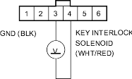
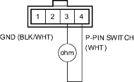

- Turn the ignition switch ON (II) and measure the voltage between the No. 3 and No. 4 terminals of the steering lock assembly connector (6P).
STEERING LOCK ASSEMBLY CONNECTOR (6P)

Wire side of female terminals
Is there battery voltage?
YES - Except for KH model; Faulty key interlock solenoid/switch. Replace the ignition key cylinder/steering lock assembly. 
For KH model; Go to step 7.
NO - Check for open or short in the wire between the No. 4 terminal of steering lock assembly connector and the multiplex control unit or key interlock relay. If the wire is OK, check for loose terminal fit in the multiplex control unit connectors, or replace the key interlock relay.
- Turn the ignition switch OFF.
- Disconnect the park pin switch connector (4P).
- Check for continuity between the No. 3 and No. 4 terminals of the park pin switch connector (4P) while you move the shift lever in and out of the
 position.
position.
PARK PIN SWITCH CONNECTOR (4P)

Terminal side of male terminals
Is there no continuity with the shift lever in position and continuity with the shift lever in any position other than ?
YES - Repair open or short in the wires between the park pin switch connector and the key interlock relay and ground. If wires are OK, replace the key interlock relay.
NO - Inspect the park pin linkage. If the linkage is OK, replace the park pin switch.